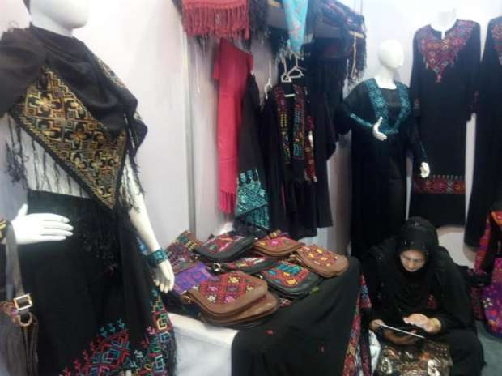
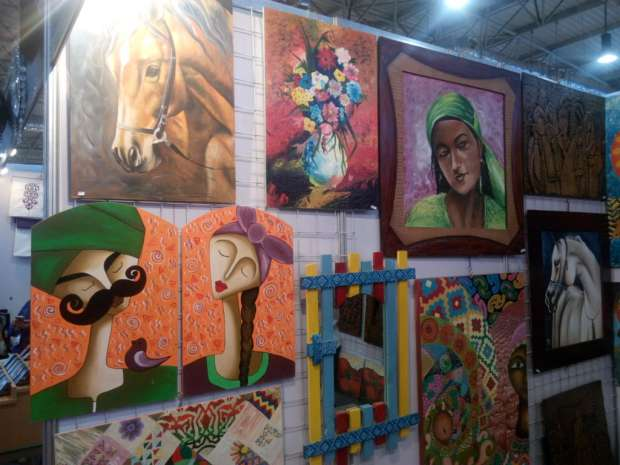
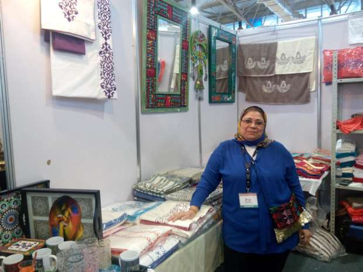
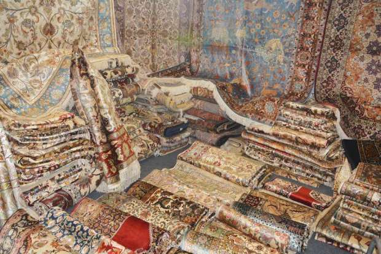
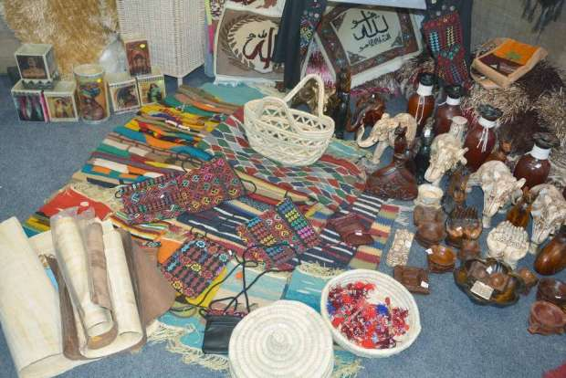

أحدث الأخبار
- الزمالك يكتسح رينجرز النيجيري بأربعة أهداف مقابل هدف وحيد
- القضاء الإداري يقضي بحل اتحاد الكرة وبطلان الانتخابات الأخيرة
- مقتل 3 أشخاص وإصابة 3 آخرين في حادث مروري بالبحيرة
- وزير الخارجية يجري اتصالاً مع رئيس المجلس الرئاسي الليبي
- عاصمة مصر تتجه لزيادة سكانية نصف مليون العام الجاري
- باولو يقود هجوم الزمالك أمام رينجرز في دوري الأبطال
- المالية تعفي المطاعم غير السياحية من ضريبة القيمة المضافة بشروط
- "القضاء الإداري" يلزم الجامعة الأمريكية بتحصيل مصروفاتها بالجنيه المصري
معرض الصناعات اليدوية.. تجارب صغيرة تقاوم الأزمة الاقتصادية
رسام مشارك في المعرض الدولي للصناعات اليدوية- صورة من وزارة التجارة والصناعة
في ظل أزمة اقتصادية طاحنة تشهدها مصر حاليًا، يظهر المعرض الدولي للصناعات اليدوية المقام في الفترة من 18 إلي 25 نوفمبر الجاري، كبارقة أمل وباب رزق واسع لعشرات الصناع اليدويين، الذين يعانون بشكل خاص من هذه الأزمة، إذ ألقت بظلالها على صناعتهم.
ورغم أن هذه الأزمة لم تؤثر كثيرًا على إقبال الزائرين على زيارة المعرض، الذي يقام في أرض المعارض، إلا أن ارتفاع أسعار المنتجات وإيجار الأكشاك داخل المعرض، شكل تحديًا كبيرًا أمام الصناع الصغار، حاولوا التغلب عليه إما من خلال تقليل هامش الربح، أو من خلال التفرد والإتقان الشديد للصناعة.
فرصة كبيرة
في أحد أكشاك المعرض، جلست صابحة إبراهيم البدوية التي جاءت من شمال سيناء، تحسب ما كسبته حتي اليوم الرابع من المعرض، الذي تعتبره فرصة كبيرة ونادرة لبيع وتسويق منتجاتها اليدوية من العبايات والأوشحة السيناوية.

سيدة سيناوية تعرض منتجاتها ضمن المعرض الدولي للصناعات اليدوية- تصوير: سلمى خطاب
صابحة تقول إنها تنتظر مثل هذه المعارض بفارغ الصبر لأنها الفرصة الوحيدة أمامها لتسويق منتجاتها اليدوية المصنوعة على الطراز البدوي السيناوي.
وأضافت "الحرف اليدوية السيناوية لا يتم بيعها إلا من خلال مثل هذه المعارض، التي تعتبر الفرصة الوحيدة لنا، ففي مجتمعنا الكل يصنع منتجات يدوية، ولكن لا يوجد زبون يشتري".
واعتبرت صابحة أن هذا المعرض يمثل "رسالة تقول إن مصر مليئة بالحرف والمنتجين، لكنهم لا يجدون مظلة شاملة تجمعهم وتنظم عملهم بشكل دائم ومستمر.. ففي الأوقات التي لا توجد فيها معارض نجلس في المنزل ولا نبيع شيئًا، رغم أن الإقبال على مشغولاتنا اليدوية السيناوية يكون كبيرًا خلال المعارض التي نشارك بها".
أزمة الدولار تؤثر على أسعار الخامات
على جانب آخر من المعرض، وقف الرسام محمود البغدادي، الذي حمل رسوماته آتيًا من مدينة الأقصر ليشارك في المعرض، يشرح لأحد زائري المعرض الطريقة التي استخدمها "للدق على الخشب"، ويوضح له أن سعر اللوحة ليس غاليًا لأن الفن يقدر فنيًا وليس ماديًا.

لوحات فنية معروضة بالمعرض الدولي للصناعات اليدوية- تصوير: سلمى خطاب
يشتكي البغدادي من ارتفاع أسعار الخامات بسبب أزمة الدولار، ويقول إن "كل المواد الخام التي استخدمها في الرسم زاد ثمنها ما لا يقل عن 30%، إضافة إلى ذلك سعر إيجار المتر في المعرض الذي يصل إلى 700 جنيه، كل هذا اضطرنا لزيادة الأسعار، وخفض هامش الربح حتي نجذب المشتري".
ورغم ذلك يري البغدادي أن ارتفاع الأسعار لم يؤثر بشكل كبير على حركة البيع داخل المعرض، مرجعًا ذلك إلى حملة الدعاية الواسعة التي أُجريت للمعرض، ولمنتجاته "الفريدة" التي تعتمد على إنتاج نسخة واحدة من كل رسمة أو لوح خشبي يصنعه وعدم تكرار التصميمات أبدًا، ما يشعر الزبون أنه أمام شيء نادر إن لم يحصل عليه الآن لن يستطيع الحصول عليه أبدًا.
"نهم" المصريين للشراء

سيدة تعرض منسوجات قطنية في المعرض الدولي للصناعات اليدوية- تصوير: سلمى خطاب
جناح الاكسسورات المنزلية والمنسوجات القطنية كان الأكثر ازدحامًا، وترى نينا شوقي، مصممة المنسوجات، أن المصريين خلال هذا المعرض لديهم "نهم للشراء"، وترجع نينا ذلك، لحملات الترويج الواسعة للمعرض والتي تشجع الناس على شراء المنتج المصري.
وتقول نينا "بعض الزبائن كانوا يسألونني أكثر من مرة ما إذا كانت منتجاتنا القطنية صناعة مصرية، وبعضهم كان يسأل أيضًا عن الخامات والخيوط التي نستخدمها في التطريز إن كانت صناعة مصرية، ويشترون بكثافة لأن كل منتجاتنا صناعة مصرية، إضافة إلى خوفهم من موجة غلاء جديدة في الأسعار".
وتعمل نينا في صناعة وتطريز المنسوجات القطنية المنزلية منذ 9 سنوات، وتتعاقد مع عدد من الورش بمحافظة القليوبية، يعمل بها النساء خصيصًا.
وتقول نينا "بدأت عملي في هذا المجال بالصدفة منذ 9 سنوات، حين اكتشتف أن ابني مريض بحساسية من الألياف الصناعية، فبدأت بتصنيع المنسوجات القطنية له خصيصًا، ثم جاءتني فكرة مشروع صغير لصناعة المنسوجات القطنية، وبدأت فيه برأس مال صغير لا يتجاوز 2000 جنيه، ومع الوقت توسعت، ووضعت أمام عيني هدف تشغيل السيدات خصيصًا لأنهن الأكثر التزامًا بالعمل والأكثر احتياجًا للمال".
أما أميرة إبراهيم، التي بدأت عملها في صناعة الديكورات والاكسسورات المنزلية منذ خمس سنوات، فقالت إنها "لاحظت خلال هذا المعرض تغيرا في ثقافة المصريين تجاه المصنوعات اليدوية والمنتج المصري، فأصبحوا يبحثون عنه أكثر، رغم أنهم يشعرون بغلاء سعره، خاصة وأن أزمة الدولار أدت إلى ارتفاع أسعار كل الخامات التي نعمل بها، وأثر هذا بدوره على سعر المنتج النهائي، لكن هذا لم يؤثر كثيرًا على الإقبال على المعرض".
ترويج لحرفة تندثر
الرسام أحمد وهبة مخيمر، الذي جاء من الوادي الجديد، يعتبر مشاركته في المعرض فرصة للترويج لحرفته النادرة، وهي الرسم بالرمال الطبيعية، حيث يقول، إنه "يُحضر الأحجار الملونة من الجبال في رحلات استكشافية يقوم بها، ثم يستخدم هذه الأحجار في رسم لوحات وجداريات بمواد طبيعية 100%".
ويعمل مخيمر على تدريب الشباب والفتيات على حرفته "النادرة"، ويقول "تقدمت في العمر، ولا يوجد كثيرون في مصر يعملون بمثل هذه الحرفة، ويرسمون بألوان ومواد طبيعية على الرغم من جمالها وتوافرها، ولذلك اتفقت خلال المعرض على ورش لتدريب طلاب كليات الفنون الجميلة على هذا النوع من الفن، حتي يستمر".
صناعة السجاد الأكثر معاناة

سجاد ضمن المنتجات المباعة بالمعرض الدولي للصناعات اليدوية - صورة من وزارة الصناعة
كان جناح السجاد والكليم بنهاية المعرض شبه خاويًا، خاصة مع ارتفاع الأسعار بشكل كبير.
ويقول سعيد صادق، أمين عام جمعية تنمية صناعة السجاد بالمنوفية، إن أسعار السجاد ارتفعت بشكل كبير، فباتت تبدأ من 900 جنيه للسجادة الصوف الصغيرة، حتى 15 ألف جنيه للسجاد الحرير، لكن الأزمة الحقيقية التي نواجهها هي أن أغلب الخامات والمواد التي نعمل بها أصبحت غير متوفرة بسبب أزمة الدولار وصعوبة الاستيراد.
مشترون: جئنا للمنتج المصري
من بين مئات الزوار الذين يذهبون للمعرض يوميًا، قالت الطبيبة أمينة محمود إنها أتت خصيصًا لهذا المعرض لشراء المنتج المصري، "المنسوجات المصرية تتميز بجودتها وجمالها، رغم أن الأسعار مرتفعة بعض الشئ إلا أنها تستحق بسبب جودتها، كما أن أسعار كل شيء ارتفعت بوجه عام".
أما ربة المنزل مريم كامل، فترى أن "الأسعار معقولة مقارنة بارتفاع أسعار المنتجات المستوردة التي تتميز بنفس الجودة، بل أن المنتج المصري يكون أفضل ومناسبا للذوق المصري أكثر من المستورد".
ويقول مروان السيد إنه جاء لشراء الديكورات المنزلية المصنوعة يدويًا، وإنه اختار المنتج المصري تحديدًا لدعم استمرار هذه الصناعات.

صورة لمنتجات يدوية تباع بالمعرض الدولي للصناعات اليدوية - صورة من وزارة التجارة
منظمو المعرض: هدفنا التصدير للخارج
ماجد سمير، المدير التنفيذي لمجلس تصدير الصناعات اليدوية (غير حكومي)، يقول إن فكرة المعرض جاءت ضمن استراتيجية المجلس لتنمية الصناعات اليدوية، "ووجدنا فكرة مماثلة لدى مؤسسة الأهرام للإعلان، فخاطبنا وزارة التجارة ووزارة التضامن الاجتماعي لإقامة المعرض، وتم تنظيم المعرض بالتعاون بين هذه الجهات الأربعة".
ويضيف سمير "كنا نستهدف من هذا المعرض أمرين، الأول هو البيع المباشر، وحققنا هذا الهدف بنسبة كبيرة، والهدف الثاني هو التصدير، ونعمل عليه، فحتى الآن حصلنا على قائمة بها 15 من المشترين الأجانب، من دول فرنسا وإيطاليا وبولندا وكوريا الجنوبية وألمانيا، ولكننا مستمرون في العمل على هذا الهدف تحديدًا".
وقال سمير إن "الدعم الحكومي لم يكن كافيًا، حيث توقف عند خطابات الرعاية وتسهيل الإجراءات فقط، رغم اتجاه الدولة لدعم الصناعات المحلية، ورغم ذلك، تمكنا من جمع 105 عارضين خلال هذا المعرض، فيما يزيد على 10 قطاعات أبرزها صناعة الفخار والخزف والحلي والسجاد اليدوي والمشغولات المعدنية وصناعة الشموع والمواد التجميلية الطبيعية ووحدات الإضاءة والأرابيسك".
واعتبر سمير أن المعرض "لاقى رواجًا فحتى اليوم الرابع كان الإقبال عليه جيدا جدًا لكننا لن نستطيع إخراج إحصائيات عن القوة الشرائية أو أعداد الزائرين قبل انتهاء المعرض".
وتحتل مصر المرتبة التاسعة في قائمة أفضل 10 دول نامية تصدر المنتجات اليدوية، حيث بلغت صادرات قطاع الصناعات اليدوية والحرفية نحو 538 مليون دولار في 2014، بحسب تقارير وزارة الصناعة والتجارة المصرية.


{kind=link}
تعليقات الفيسبوك